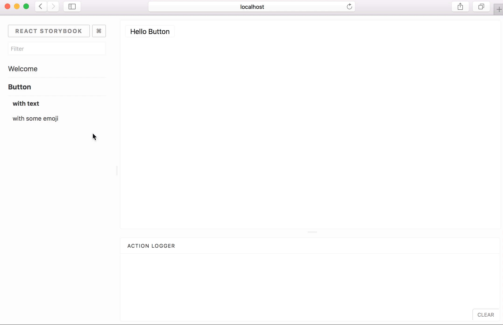

Известия
Известия
Announcing Storybook 3
webpack2
snapshot testing++
bugfixes and enhancements

Читать
Ссылки
New in Chrome 59
prettier 1.4.0: TypeScript and CSS support
https://jacquesmattheij.com/improving-a-legacy-codebase
https://blog.mariusschulz.com/2017/06/02/typescript-2-3-generic-parameter-defaults
https://github.com/sospedra/mayre
https://chromereleases.googleblog.com/2017/06/stable-channel-update-for-desktop.html
Авторы
Ирина Митрофанова
Михаил Шатихин